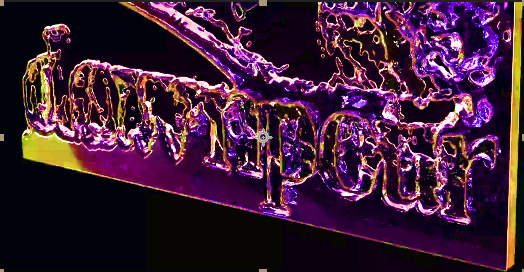
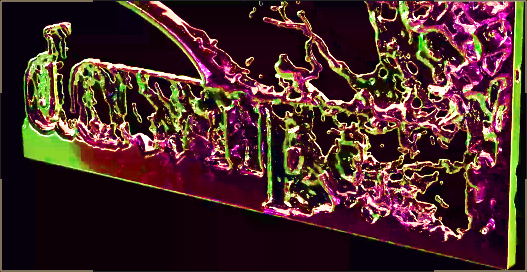
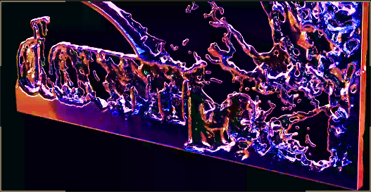

I have primarily worked with the Associated Student's Union of the University of Oregon (ASUO) during Winter 2023.
Here I worked with an extensive team of personal relations and media representatives to design and execute public campaigns for notable figures such as:
Here I functioned as the sole animator for this campaign. I worked primarily in Blender, creating varoius different particle systems for each problem.
I also made various versions and prototypes for the campaign's imagery and brand design.
  For practice, I created this 2D animation using Blender for the Associated Students Union of the University of Oregon.
It was made an available asset in which the organization utilized in their social media posts.
At the end of my cycle at the Associated Students Union @ UO, I worked with creating prototype animations for NARCAN.
This NARCAN animation served as a demonstration video on how to unpackage and operate the device. It is a hand-drawn animation.